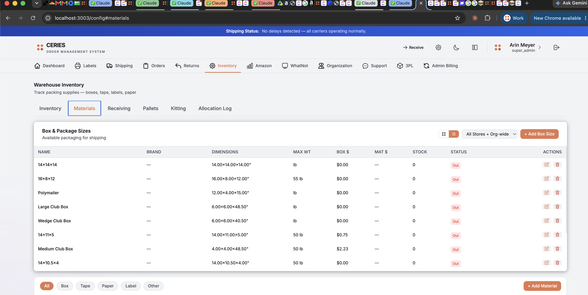

Understanding order statuses
Every order in the Ceries OMS moves through a defined set of statuses. Understanding what each status means helps you identify where an order is in the fulfillment flow.
Status definitions
- Unfulfilled — Order received, not yet assigned a label. Appears in the Rate Shopper queue.
- Label Created — A shipping label has been generated. The carrier has the shipment in their system.
- In Transit — Carrier has scanned the package. Tracking is active.
- Delivered — Carrier has confirmed delivery.
- Cancelled — Order was cancelled before fulfillment.

Finding a tracking number
Navigate to Orders in the left sidebar. Use the search bar to find the order by order number, customer name, or SKU.
The order detail panel opens on the right. The tracking number appears under the Shipping section once a label has been created.
Opens the carrier's tracking page in a new tab. For USPS, UPS, or FedEx shipments this shows the full tracking history.
Troubleshooting
Order shows "Unfulfilled" but it was packed
The status only advances when a label is created in the OMS. If the item was packed but the label was printed outside the OMS (e.g. from Shopify admin directly), the OMS won't see it.
Contact Ceries support with the order number and we'll manually update the status.
Tracking number is not updating
Carrier tracking updates typically take 2–6 hours after the first scan. If tracking shows no movement after 24 hours from the label creation date:
- Verify the package was handed to the carrier (check the carrier receipt if available).
- Contact Ceries support with the order number so we can investigate the tracking event feed.
Order is missing from the Orders page
If a Shopify order was placed but isn't appearing in the OMS, see Shopify Sync for troubleshooting steps.
If the order was refunded in Shopify, it may not appear in the standard search view. Contact Ceries support with the order number and we can look it up directly.
Package jammed or delayed at a carrier facility
Occasionally USPS or UPS packages become stuck at a facility with no further scans for several days. This typically happens at high-volume sorting centers.
- If tracking has shown no movement for 3+ days at the same facility, the package is likely jammed — it hasn't been lost.
- In most cases the package clears the facility within 1–5 days without any action required.
- If the customer is unwilling to wait, contact Ceries support and we can arrange a reship. The jammed package will be returned to us when it eventually delivers.
Requesting a reship
If a customer did not receive their order (lost in transit, arrived damaged, or jammed beyond acceptable wait time), a reship creates a new outbound shipment with a new label.
Reshipping is handled by Ceries — contact support@ceries.com with the order number and the reship destination (confirm with the customer if the address has changed).